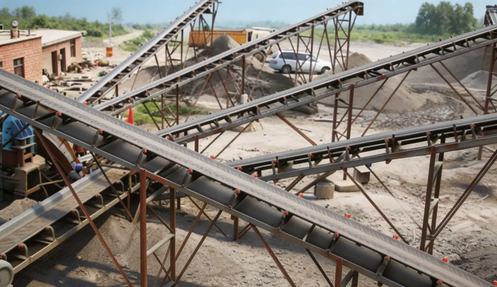

The Belt Conveyor is a continuous conveying equipment that uses the conveyor belt as both the traction and load-carrying component. The drive pulley drives the belt in cyclic motion through friction, and materials placed on the belt move with it, achieving continuous conveying from loading point to discharge point. The TB series is a general-purpose fixed Belt Conveyor with large load capacity and long conveying distance (single unit up to 240m, multiple units in series further). The full series has 7 models (TB-500 to TB-1600), belt width 500-1600mm, belt speed 0.8-3.15 m/s, capacity 40-2300 t/h, incline 0-20°. Widely used for horizontal or inclined conveying of lump, granular and powder bulk materials in mining, metallurgy, coal, port, building materials, power and other industries, and can also be used for piece goods conveying. Simple structure, standardized components, easy maintenance — the most widely used type in bulk material conveying.

The Belt Conveyor is a continuous conveying equipment that uses the conveyor belt as both the traction and load-carrying component. The drive pulley drives the belt in cyclic motion through friction, and materials placed on the belt move with it, achieving continuous conveying from loading point to discharge point. The TB series is a general-purpose fixed Belt Conveyor with large load capacity and long conveying distance (single unit up to 240m, multiple units in series further). The full series has 7 models (TB-500 to TB-1600), belt width 500-1600mm, belt speed 0.8-3.15 m/s, capacity 40-2300 t/h, incline 0-20°. Widely used for horizontal or inclined conveying of lump, granular and powder bulk materials in mining, metallurgy, coal, port, building materials, power and other industries, and can also be used for piece goods conveying. Simple structure, standardized components, easy maintenance — the most widely used type in bulk material conveying.
The motor drives the head pulley (drive pulley) through a gearbox. The belt wraps around the drive pulley with a certain pre-tension, and relies on the friction between the pulley and belt to drive the belt in cyclic motion. The tail pulley (bend pulley) is used to change the belt running direction, forming a closed loop.
Upper idlers (trough idlers) support the belt in a trough shape (usually 3 rollers forming 30°-45° trough angle), increasing the load cross-section and preventing material spillage. Lower idlers (flat idlers) support the return section belt. Idler spacing is typically 1-1.5m (carrying section) and 2-3m (return section).
The screw take-up device (or gravity take-up) adjusts belt pre-tension to ensure the drive pulley does not slip. Self-aligning idlers and guide rollers automatically correct belt misalignment to keep the belt centered.
| Model | Belt Width (mm) | Belt Speed (m/s) | Capacity (t/h) | Length Range (m) | Pulley Dia. (mm) | Power Range (kW) | Incline (°) |
|---|---|---|---|---|---|---|---|
| TB-500 | 500 | 0.8-2.5 | 40-230 | 20-240 | 500/630 | 1.5-30 | 0-20 |
| TB-650 | 650 | 0.8-2.5 | 67-391 | 20-240 | 500/630 | 1.5-45 | 0-20 |
| TB-800 | 800 | 0.8-3.15 | 118-824 | 20-240 | 500/630 | 2.2-75 | 0-20 |
| TB-1000 | 1000 | 1.0-3.15 | 230-1233 | 20-240 | 500/630/800 | 4-100 | 0-20 |
| TB-1200 | 1200 | 1.0-3.15 | 300-1600 | 20-240 | 500/630/800 | 5.5-130 | 0-20 |
| TB-1400 | 1400 | 1.0-3.15 | 400-2000 | 20-240 | 630/800/1000 | 7.5-160 | 0-20 |
| TB-1600 | 1600 | 1.0-3.15 | 500-2300 | 20-240 | 630/800/1000 | 11-220 | 0-20 |
※ Capacity is based on material density 1.0-1.6 t/m³, horizontal installation, trough angle 35°. Capacity decreases with incline. Power range is for reference; actual selection depends on length, lift height, and material characteristics. Technical data subject to change without prior notice.
| Component | Material / Spec | Function |
|---|---|---|
| Conveyor Belt | Multi-layer cotton canvas / NN nylon / EP polyester core + rubber cover | Carries and conveys materials, also acts as traction component |
| Drive Pulley | Q235 steel drum + cast-welded spoke, rubber lagged surface | Drives the conveyor belt in cyclic motion through friction |
| Bend Pulley | Q235 steel drum, smooth/rubber lagged | Changes belt direction to form a closed loop |
| Trough Idler (Upper) | Seamless steel tube + stamped bearing housing, 3-roller type | Supports the belt in a trough shape to increase load cross-section |
| Flat Idler (Lower) | Seamless steel tube + stamped bearing housing | Supports the empty belt on the return section |
| Take-up Device | Screw take-up / Gravity take-up / Hydraulic take-up | Adjusts belt pre-tension to prevent slipping |
| Gear Motor | Hardened gear reducer + three-phase asynchronous motor | Speed reduction and torque increase to drive the head pulley |
| Frame | Q235 channel steel / angle steel welded | Supports idlers and belt, forms the conveying line framework |
The TB-1600 can reach a single-unit capacity of 2300 t/h, far exceeding other conveying equipment types, suitable for large-scale continuous conveying.
Single unit up to 240m, multiple units in series up to several kilometers, suitable for long-distance material transfer in mines.
Idlers evenly support the belt for smooth operation with low impact, low failure rate, suitable for 24-hour continuous operation.
Standard incline range 0-20°, both upward and downward conveying possible. Chevron belt can increase incline to 25°.
Key components like belt, idlers, pulleys, and gearbox follow national standard dimensions for easy procurement and replacement.
Daily maintenance only requires lubricating idler bearings and checking belt wear and tension. No complex wearing parts.
Primary conveying of ROM ore from mining face to crushing station. Large-width TB series models (TB-1200~TB-1600) meet high-volume conveying needs, replacing mine trucks to reduce costs.
Material transfer between crushing, grinding, screening, and beneficiation stages. Belt conveyors connect process equipment to form continuous production lines. TB-500~TB-1000 are commonly used in processing plants.
Conveying and ship loading of iron ore, coal, grain and other bulk cargo from stockyard to wharf. Long-distance high-capacity belt conveyors are core port bulk logistics equipment. TB-1200 and above commonly used.
Stockpiling and transfer at coal mines, washing plants, and power plants. Belt conveyors with stacker-reclaimers enable automated yard management. TB-800~TB-1400 are mainstream in coal industry.
Aggregate conveying between stages in crushing plants, including after primary crushing, secondary crushing, and screening. TB-500~TB-1000 for small-medium lines. TB-1200+ for large mines.
Fuel coal conveying from coal yard to boiler bunker in thermal power plants. Belt conveyors must meet continuous, safe, dust-proof requirements. TB-650~TB-1200 commonly used.
Need a Belt Conveyor? Contact us for a selection solution and quotation